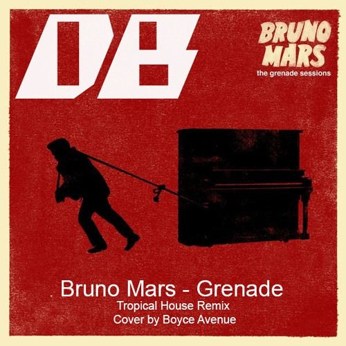

BIOGRAFÍA
Peter Gene Hernández nació en Honolulú el 8 de octubre de 1985. conocido artísticamente como Bruno Mars, es un cantante, compositor, productor musical y bailarín estadounidense. Comenzó a crear música desde una edad muy temprana y actuó en muchos escenarios de su pueblo natal a lo largo de su niñez, realizando imitaciones. Se graduó de la escuela secundaria y se mudó a Los Ángeles, donde continuó con su carrera musical.
TRAYECTORIA
Su música se caracteriza por mostrar una amplia gama de estilos e influencias de géneros musicales variados. Trabajó con grandes artistas de diferentes géneros y esas experiencias, reconoce Mars, han tenido impacto en su propia música. Cuando era niño fue muy influenciado por artistas como Elvis Presley y con frecuencia se hacía pasar por él desde una edad temprana. Incorpora sonidos inspirados en el reggae, funk, R&B, hip hop, rock, entre otros. Jon Caramanica de The New York Times se refiere a Mars como «uno de los cantantes más versátiles y accesibles en el pop»
COLABORACIONES
En febrero de 2020, se anunció una asociación entre Mars y Disney para una "narrativa teatral con temas musicales", en la que el cantante protagonizará y producirá la película. En marzo de 2020, un representante del cantante afirmó que este último estaba "en el proceso creativo de trabajar en su próximo álbum". Mars ha estado trabajando con el ingeniero de grabación Charles Moniz y el músico Babyface. En abril de 2020, el cantante aseguró a sus fans que escribe música todos los días para su próximo álbum mientras está en cuarentena.
- MEJORES CANCIONES
- When I Was Your Man
- Grenade
- Just The Way You Are

